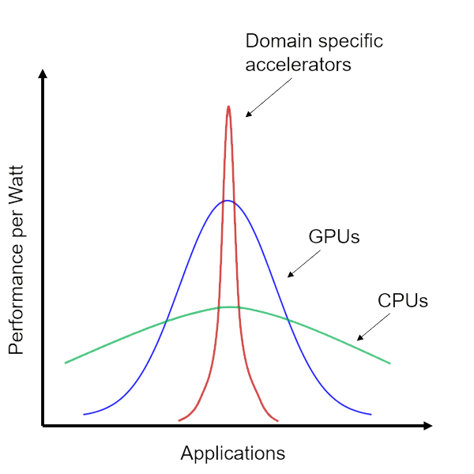
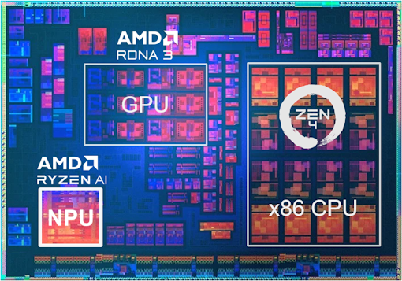

Understanding the Ryzen AI NPU¶
Goals¶
Provide background information on AI
Describe the computational requirements for AI and why specialized coprocessors are needed for energy efficient AI computing
Explain what a Neural Processing Unit (NPU) is
Introduce the AMD Ryzen AI NPU
References¶
AMD Ryzen™ AI - Windows Laptops with AI Built In
AMD Ryzen™ AI: What It Is, and How It Will Change What Your Laptop Can Do
The Future of AI¶
AI is transforming our computing experience in similar ways to how the worldwide web did when it was introduced in 1989. And like the web, AI will continue to evolve. Today’s AI applications are just the forerunners for what will be a whole new era of computing. Envisage a future where every consumer laptop or desktop comes equipped with a specialized AI coprocessor tailored to handle machine learning tasks efficiently. From enhancing image recognition and natural language processing to revolutionizing virtual assistants and personalized recommendations, the impact on our daily computing experiences will be immense.
Personal AI assistants are transforming the way we sue are computing devices to create, work and play.
If you’re a professional making content, designing graphics, creating presentations, or working on a personal project, picture this: when you begin sketching or outlining your ideas in your chosen software, the AI system activates. As you draw, the AI analyzes your work, offering real-time suggestions on techniques and artistic styles that might align with your creative direction. While you are experimenting with colors, the AI can provide complementary color palette suggestions based on the mood and theme of your work. If you are struggling with a particular element, such as drawing a realistic animal or selecting the right arrangement, the AI will generate a selection of reference images or designs. As you work, AI will apply dynamic filters and effects to your artwork, allowing you to instantly preview different visual outcomes and helping you make smarter creative decisions. Over time, your personal AI will remember and learn from your creative artistic choices and preferences. It becomes attuned to your unique style, enabling it to provide increasingly relevant suggestions.
Selected AI application domains
Virtual assistants, which are already a significant part of our lives, will reach new heights of efficiency and personalization. These assistants will better understand context, tone, and intent, enabling them to assist you with an even wider range of tasks, from managing your schedule to providing in-depth research for your work.
AI recommenders today suggest what to read, what to buy, what to stream next and more. While often effective, these systems can lead to the frustration of endless scrolling when the recommendations miss the mark. Advanced personalized recommenders, be it for entertainment, shopping, or learning, have the potential to become incredibly precise. Imagine receiving recommendations for news articles, books, and music that perfectly resonate with your preferences, enabling the discovery of experiences that might otherwise remain unnoticed. This high degree of personalization not only enhances leisure activities but also facilitates informed decision-making.
Language barriers will dissolve as laptops transform into personal digital diplomats. Whether communicating across cultures or engaging with foreign content, real-time AI translation will foster cross-cultural understanding. AI-powered transcription and recording of meeting notes will simplify life by significantly reducing the time and effort needed to capture and document discussions accurately. This technology ensures that every spoken word is transcribed and organized into coherent notes, eliminating the need for manual note-taking and minimizing the risk of overlooking essential details.
With AI, your laptop transforms not just into your smart assistant, but your smart collaborator, boosting your productivity, creativity and capability to new levels. By seamlessly integrating AI-driven tools and features into your workflow, your laptop becomes an intuitive collaborator that understands your preferences, anticipates your needs, and empowers you to accomplish more.
Computational Requirements¶
AI brings many benefits but it needs lots of computing power.
Machine learning inference, which involves applying a trained model to solve real-world problems, requires substantial computing power.
Today most AI computation is carried out in large datacenters in the cloud. For many applications we want machine learning inference running local on our laptops for speed, reliability, privacy, security and cost. For example, for video conferencing, processing your webcam or microphone data locally would be more efficient than transferring all this data to the cloud and back, reducing your bandwidth. Local processing is more stable than relying on remote services. Moving or storing data in the cloud introduces the risk of personal data compromise, making local processing a safer choice. Efficient antivirus and malware detection also require local execution to promptly identify and counter threats. Running AI applications on your own computer also reduces cost - you do not need to pay for additional cloud resources.
To run ML inference on a local computer, requires energy-efficient computing power. While CPUs and GPUs excel in general-purpose and graphics tasks, respectively, they fall short in providing the energy-efficient computing necessary for ML inference.
What is an NPU?¶
The focus on machine learning workloads has become a top priority for the designers of new hardware generations. The latest CPUs and general-purpose GPUs have integrated enhancements tailored for machine learning, including hardware support for reduced precision number formats. While these improvements contribute to the efficiency of machine learning computations on these architectures, a fundamental limit exists due to the need for CPUs and GPUs to handle various workloads beyond machine learning.
To surpass the capabilities of CPUs or GPUs and achieve greater efficiency in machine learning, a new specialized architecture, designed only for machine learning tasks is emerging.
A Neural Processing Unit (NPU) is a new class of processing unit designed to excel in machine learning inference tasks. An NPU significantly boosts the speed and efficiency of machine learning tasks on your computer. NPUs can also be referred to as Inference Processing Units or IPUs. You may see the NPU referred to as an IPU in some Ryzen AI documentation. Once the Ryzen AI driver is installed on your computer, you will see a device named IPU in the Windows Device Manager.

The power-performance advantage of domain-specific accelerators
The power-performance advantage of domain-specific accelerators like the NPU are highlighted by the graphic above. In many cases, it is not that the CPU or GPU cannot perform some of these effects. What really matters is that it cannot do them as efficiently as the NPU.
Ultimately, everybody wants a laptop that is light to carry, stays cool, and will last as long as possible on a single charge. These are the key benefits enabled by Ryzen AI.
Ryzen AI NPU¶
The Ryzen 7000 desktop and laptop chips were introduced in 2023. Alongside the main x86 CPU, Ryzen 7000 has a new type of coprocessor, a Neural Processing Unit (NPU), based on the XDNA™ AI Engine architecture. This new NPU is called Ryzen AI.

Ryzen 7040 ‘Phoenix’ mobile processor
Unlike the main x86 Zen 4 CPU based on a Von Neumann architecture, Ryzen AI is a specialized dataflow architecture that provides performance and responsiveness for AI applications, at lower power.
When you run AI workloads locally on an NPU you can get higher performance and lower latency which translates into faster responses, all of this while being more energy efficient. Responsiveness is critical for real-time applications. For example, video conferencing will suffer with higher latencies causing the video stream to stutter, or the audio stream to glitch.
Ryzen AI NPU gives you:
AI enhanced video conferencing features exclusive to systems with an NPU
Higher performance for AI workloads
Lower latency for fast responses
Lower power consumption and increased battery life allowing you to work for longer on a single charge
Having a dedicated dataflow processing unit inside your Ryzen 7000 processor allows you to experience machine learning in new and exciting ways, making your laptop smarter and more capable than ever before, with a longer lasting battery.
The Ryzen 7040 ‘Phoenix’ Mobile processors is the first new processing unit specially designed to deliver performant and efficient AI inference for x86 laptops - and not just any laptops, but the slim, lightweight ultra portables that run cool for many hours on a single processor.
Next steps¶
Discover what Ryzen AI can do by trying Windows Studio Effects.
Copyright© 2023 AMD, Inc
SPDX-License-Identifier: MIT